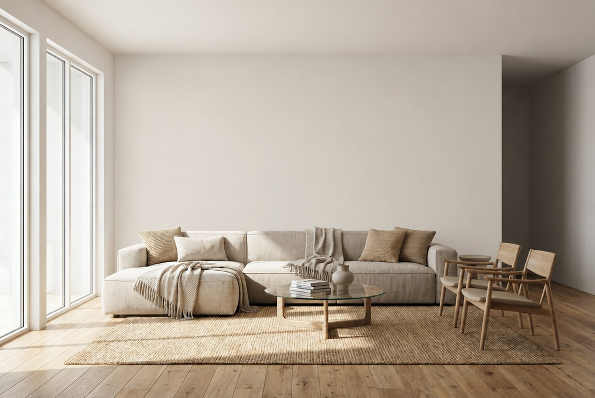
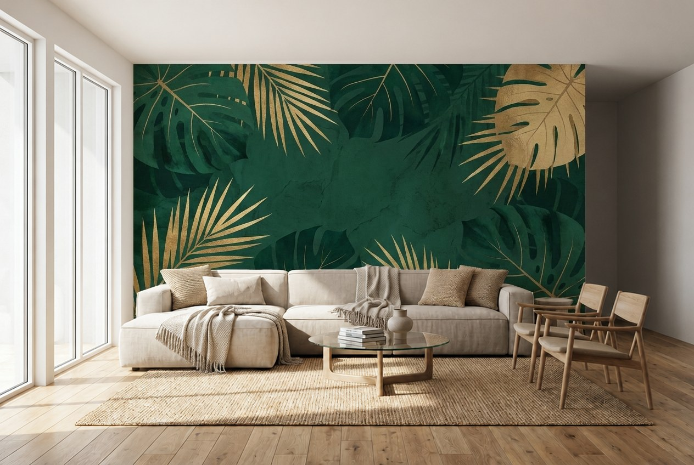
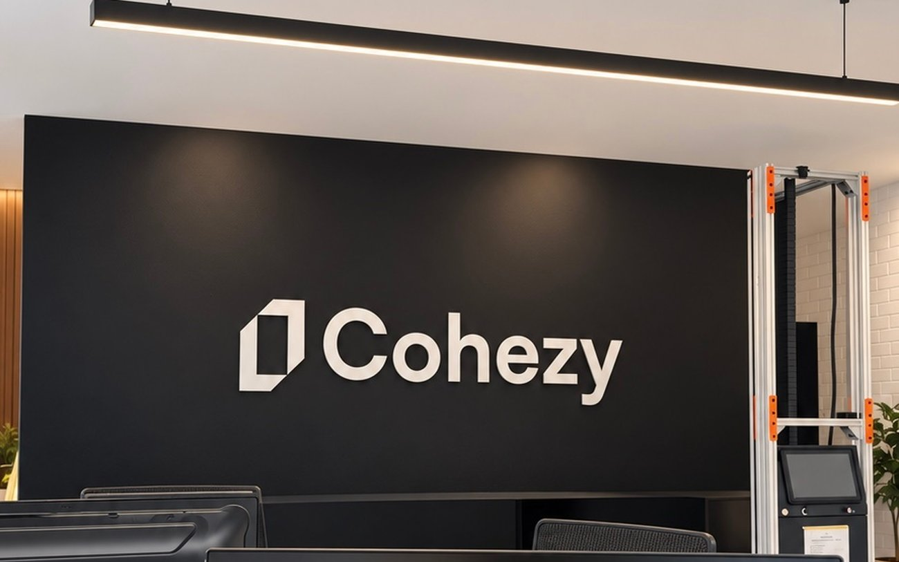
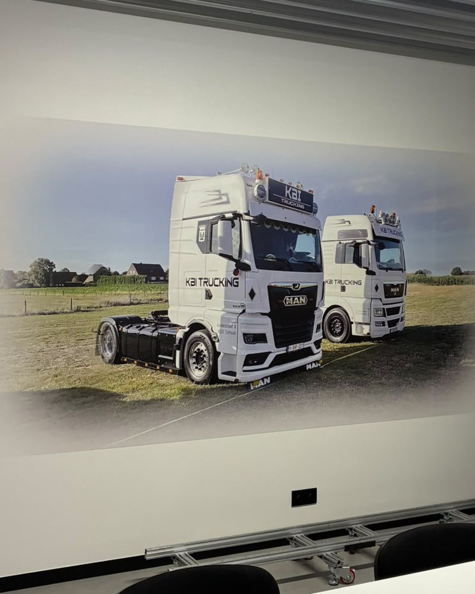
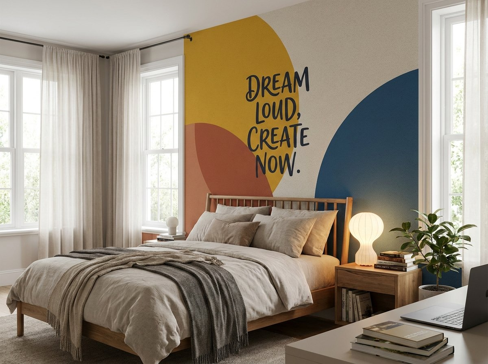
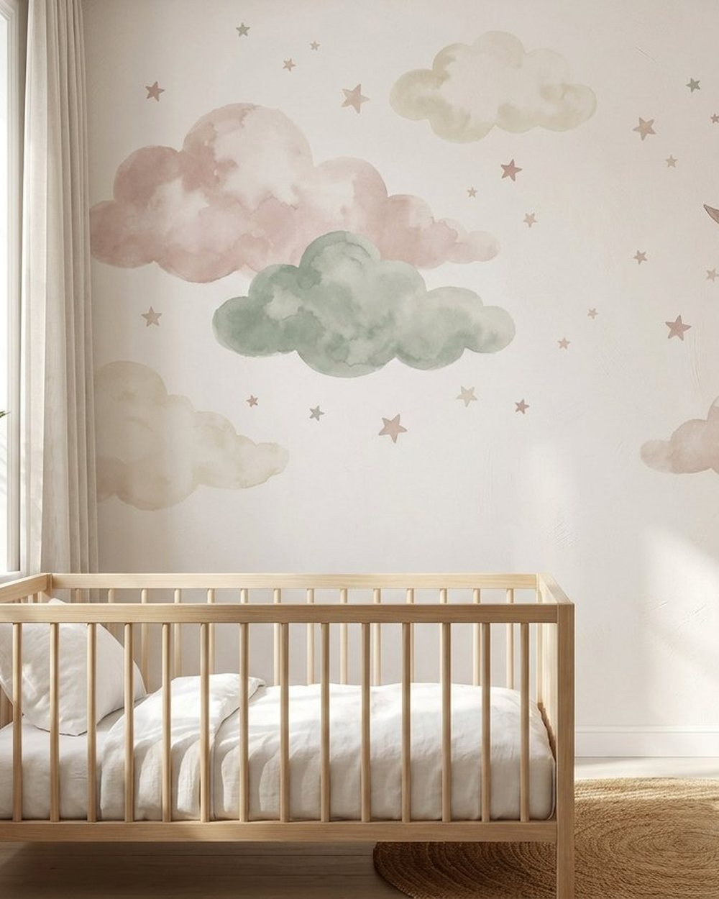
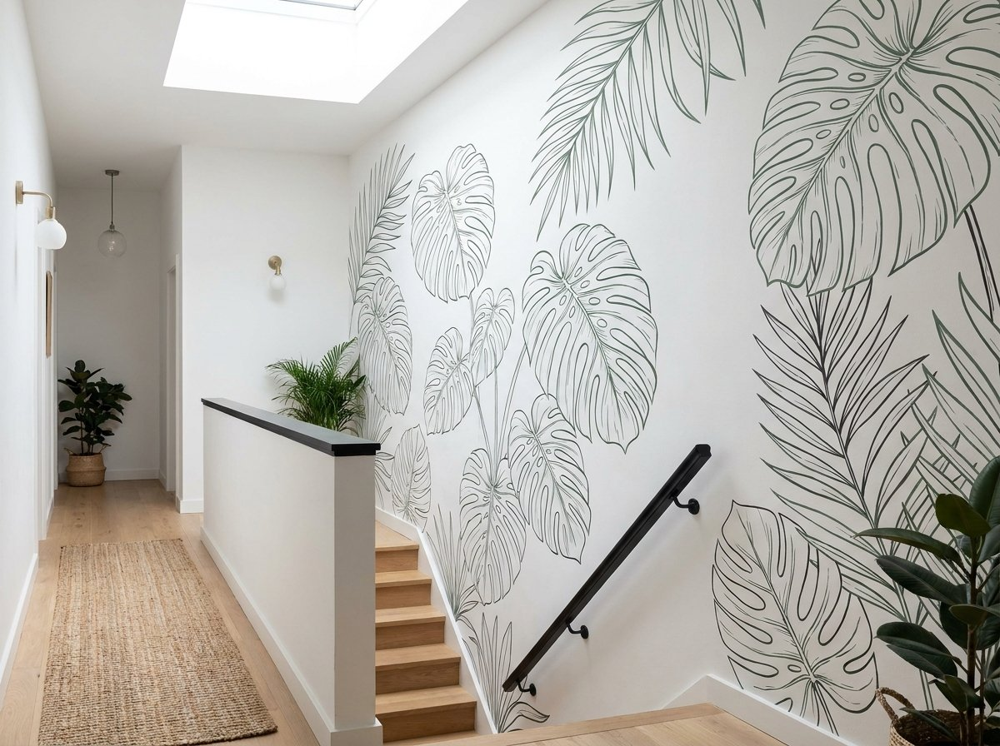
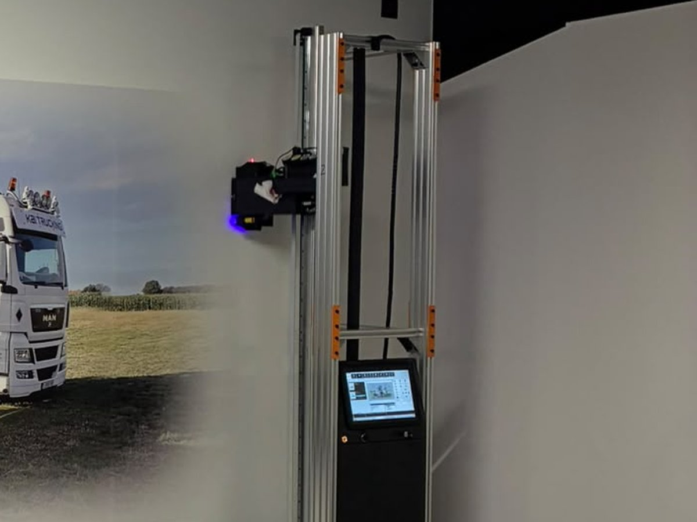

Print op jouw muur.
Geen behang, geen sticker. Wij printen jouw foto, logo of ontwerp rechtstreeks op de muur, op locatie in heel België.


Behang. Sticker.
Gewoon print, op de muur zelf.
Op bijna elke ondergrond
Pleister, baksteen, beton, hout, glas, metaal of tegels. Op donkere en ruwe muren printen we eerst een witte onderlaag.
Elk formaat, geen naden
Tot ongeveer 3,75 m hoog en nagenoeg onbeperkt in de breedte. Eén doorlopend beeld, zonder losse banen of hoekjes die loskomen.
Meteen droog en krasbestendig
De UV-inkt hardt uit tijdens het printen. Afwasbaar, geurloos en geschikt voor scholen, zorg en babykamers.
Elke muur een verhaal.
Van een bedrijfslogo op een zwarte kantoorwand tot een babykamer vol wolkjes. Echte projecten en ideeën om mee te starten.

Cohezy Agency
Logo op zwarte wand

KBI Trucking
Eigen vloot, 3,8 m breed

Tienerkamer

Babykamer

Trapgat
Stuur je muur.
Krijg drie ideeën.
- Vertel ons over je muurAfmetingen, waar hij tegenaan ligt en, als je wil, een foto.
- Stuur een voorbeeld van wat je wilEen foto, een Pinterest-beeld, je logo of gewoon een paar woorden.
- Bekijk meteen drie voorstellenTwee dicht bij je idee, één creatieve variant. Daarna werken we het samen uit.

Van idee tot muur.
Voorstel en advies
Je krijgt meteen drie voorbeelden via de configurator. Daarna bekijken we samen je muur, de ondergrond en wat er mogelijk is.
Ontwerp op maat
Heb je een eigen beeld of logo? Dan maken we het printklaar. Nog geen idee? Dan ontwerpen we iets dat past bij je interieur of je merk, rekening houdend met hoeken, plafond en stopcontacten.
Printen op locatie
We komen langs met de printer en printen rechtstreeks op je wand. Geen stof, geen lijm. Als we vertrekken, is je muur klaar.
Alles wat je wil weten.
Staat je vraag er niet bij? Bel +32 496 08 24 84 of mail info@demuurprinter.be.
Wat is muurprinten precies?
Met een computergestuurde UV-printer brengen we afbeeldingen, logo's of kunstwerken rechtstreeks op de muur aan. Het is geen sticker of behang: de inkt komt op de structuur van de wand zelf en hardt meteen uit met UV-licht.
Op welke ondergronden kunnen jullie printen?
Op vrijwel elk verticaal oppervlak: pleisterwerk, baksteen, beton, hout, glas, metaal en tegels. De printer houdt rekening met de oneffenheden van de muur.
Kunnen jullie ook op vloeren printen?
Ja. Met een aparte module printen we ook op vloeren, bijvoorbeeld een logo in een showroom, wegwijzers in een magazijn of een design in een horecazaak.
Hoe werkt de configurator met voorbeelden?
Je geeft de afmetingen van je muur op, stuurt een referentiebeeld of omschrijving en eventueel een foto van je muur. Daarmee maken we automatisch drie schetsen van hoe het eruit kan zien: twee dicht bij je idee en één creatieve variant met een zachte fade-out. Het zijn schetsen om een richting te kiezen; het definitieve ontwerp werken we daarna samen uit.
Hoe lang blijft de print mooi?
Binnenshuis blijft de print minstens 10 tot 15 jaar kleurecht. Omdat de inkt meteen uithardt, is de print direct droog, krasbestendig en afwasbaar.
Is de inkt veilig?
Onze UV-inkten zijn geurloos en vegan, en geschikt voor gevoelige omgevingen zoals scholen, zorginstellingen en babykamers.
Wat is de maximale grootte van een print?
In de breedte zijn we nagenoeg onbeperkt, omdat de printer langs de muur verplaatst wordt. In de hoogte printen we tot ongeveer 3,75 meter. Voor hogere muren bekijken we graag een opstelling op maat.
Moet ik de muur voorbereiden?
De muur moet schoon, droog en vetvrij zijn. Een gladde witte muur geeft het meest kleurrijke resultaat, maar ook op donkere of ruwe muren kunnen we printen dankzij een witte onderlaag.
Kan de printer tot in de hoeken printen?
Niet helemaal. Waar je muur tegen iets aanligt, blijft een rand vrij: ongeveer 30 à 40 cm tegen een hoek of aanliggende muur, zo'n 30 cm onder het plafond, ongeveer 36 cm boven de vloer en zo'n 12 cm rond een deur- of raamkader. Aan een open rand, waar niets in de weg zit, kan het beeld wel tot aan de rand lopen. In de configurator zie je meteen welk deel van je muur bedrukbaar is.
Hoe lang duurt het printen?
Gemiddeld printen we 4 à 8 vierkante meter per uur, afhankelijk van het ontwerp. Een groot bedrijfslogo is vaak binnen een halve dag klaar.
Kan de print later weg?
Ja. Net als een geschilderde muur kan je de print overschilderen met twee lagen goede verf.
Wat kost muurprinten?
De prijs hangt af van de grootte, de ondergrond en het ontwerp. Je krijgt altijd een vrijblijvende offerte op maat. Start met de configurator, dan zie je meteen ook drie voorbeelden.
Waarom muurprinten in plaats van behang?
Een muurprint is naadloos, zonder luchtbellen of loskomende hoekjes, en werkt ook op ondergronden waar behang niet hecht, zoals baksteen of glas. Het resultaat oogt exclusiever en gaat langer mee.
Klaar voor jouw muur?
Stuur je muur en een voorbeeld van wat je mooi vindt. Binnen enkele minuten zie je drie ideeën.
Ontwerp je muur